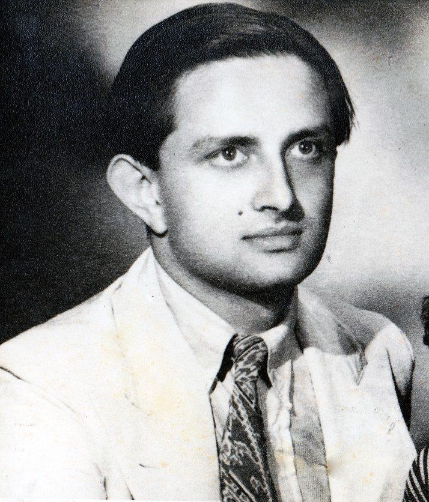
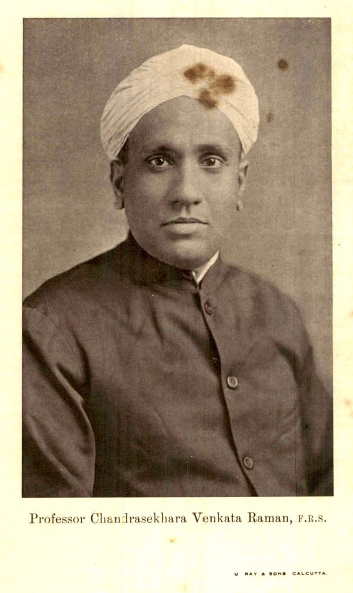

CURIOSITY. COMPETITION. COLLABORATION.
Behind every discovery,
there is a human story.
The letter that changed a life. The experiment nobody believed. The mentor who opened a door. Follow the people and ideas that made science.
Find your first storyExplore the connectionsAncient manuscripts to modern genetics and artificial intelligence.


A wartime detour.
A lifetime of possibility.
Sarabhai, Raman, and the meeting of two scientific lives.
Read their story01 / THE HUMAN SIDE OF SCIENCE
Stay for the story.
Real events. Complicated people.
Every story has a thread to follow.
02 / THE CONNECTED ATLAS
Pull on a thread.
Browse the whole collection.
Tap a person or idea. Follow the next connection.
Browse discoveries
03 / FOLLOW AN IDEA THROUGH TIME
One question leads to another.
Guided routes through the atlas.
Each stop opens its evidence and connections.
04 / HOW TO READ THE ATLAS
Science is a network.
History is more than a line.
This growing atlas spans selected milestones from ancient mathematics to contemporary science. It includes multiple scientific traditions and collective achievements. It is a substantial collection, not the complete history of every discovery or scientist.
Stories are historical narratives with reading sources, not fictional scenes. We do not invent dialogue or private thoughts. Later recollections and contested credit are identified where relevant.
Mentorship means a documented teaching or research relationship. Collaboration, rivalry and debate are mutual links. Other arrows name how one idea relates to another. “Context” and “Background” mark curated comparisons or broader foundations, not proof of direct personal influence.
Dates mark selected publications, experiments or announcements. Scientist dates mark their earliest contribution in this collection, not birth. Place labels describe research settings, not nationality. Missing links mean the atlas has not mapped them yet. Shared milestone links associate people with the same event. Connected ideas links follow sourced relationships between their mapped discoveries. Neither category establishes that the people met or collaborated.